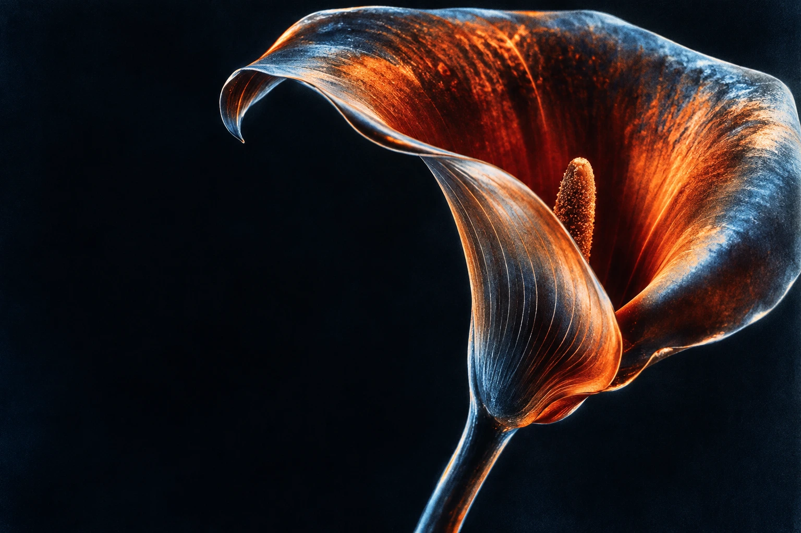

Kohl's
Commerce experiences across checkout, wallet, account, and self-checkout. Advancing AI practice along the way.

Marco van Hylckama Vlieg
Product designer. Builder. Experimenter.
Twenty years of product design.
An ongoing experiment in what comes next.
I work across product design, engineering, and AI. From complex enterprise systems to independent experiments, the aim stays the same: make something useful, clear, and worth coming back to.
A prototype makes an idea tangible. It shows what feels right, what falls apart, and where the next good question lives.
Commerce experiences across checkout, wallet, account, and self-checkout. Advancing AI practice along the way.
Mobile, voice, and personalization design through a major retail transformation.
High-fidelity prototypes for Cloud AI, Assistant, and Android. Making decisions through making.
Global prototyping teams, personalization, design process, and senior talent development.
UX and engineering for multilingual platforms across an international entertainment portfolio.
An independent product lab for AI tools, games, music, video, and useful experiments.